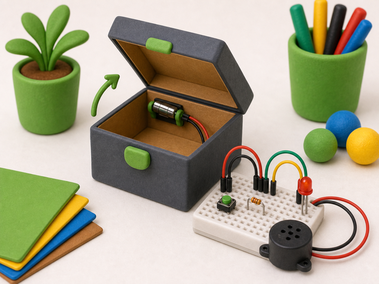
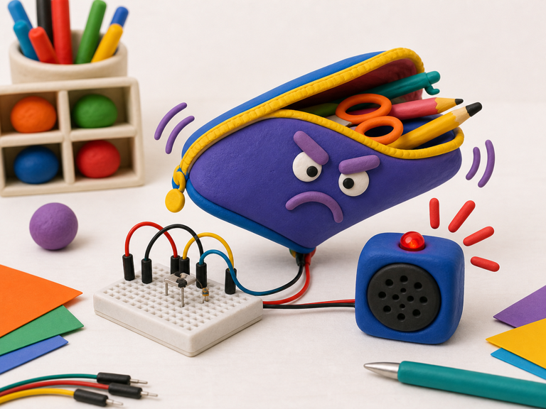

Box lid sensor
DetectBox is tilted open
->
DecideLid has moved
->
DoStart surprise
A tilt switch lets your project notice when something tips or changes angle.
Inside, a tiny moving contact opens or closes the circuit when the switch tilts.
Your projects can use tilt to spot bumps, flips, lids opening, or things being picked up.


from gpiozero import Button
tilt = Button(17)
tilted = tilt.is_pressedfrom picozero import Switch
tilt = Switch(2)
tilted = tilt.is_closedtilted when your project needs to react to being tipped.